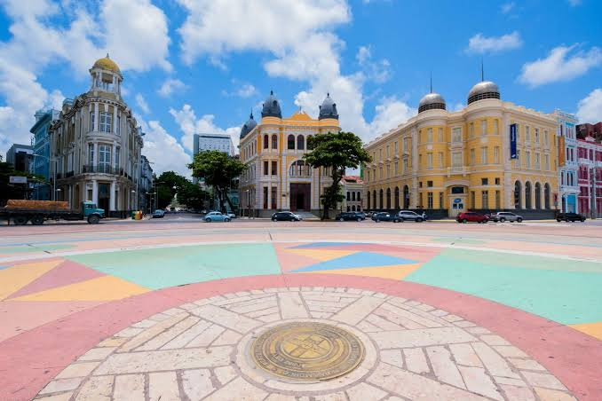
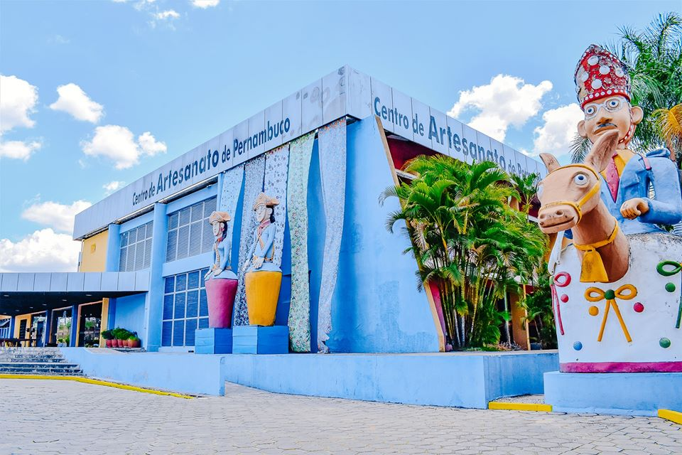
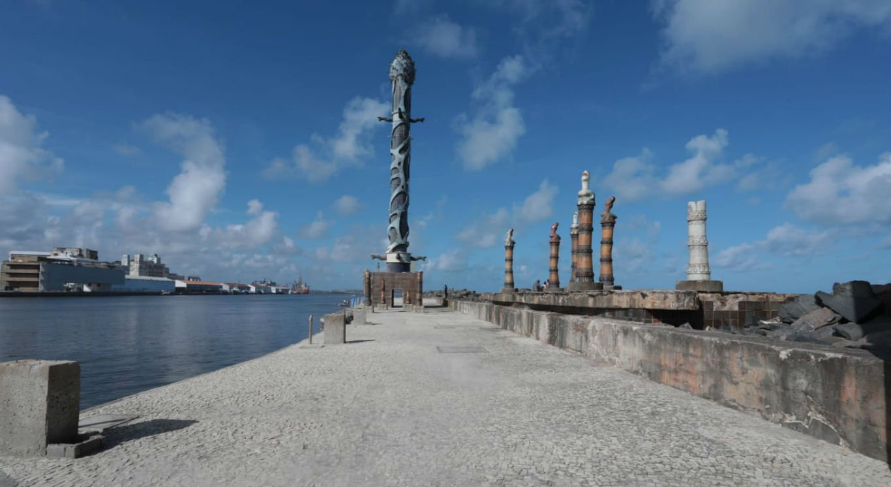

Recife, um verdadeiro paraíso!
Conheça nossos principais pontos turísticos!
Recife, uma cidade encantadora localizada na região nordeste do Brasil, é famosa por sua rica herança cultural, praias deslumbrantes e uma vida noturna agitada. Aqui estão alguns dos pontos turísticos imperdíveis de Recife, incluindo o icônico Marco Zero:
Marco Zero
Localizado no coração da cidade, o Marco Zero é o ponto de referência inicial para medir todas as distâncias rodoviárias no Brasil. É uma área vibrante repleta de restaurantes, bares e apresentações culturais ao ar livre.
Recife Antigo
Conhecido por sua arquitetura colonial e ruas de paralelepípedos, o bairro histórico de Recife Antigo oferece uma visão fascinante do passado da cidade, com museus, galerias de arte e edifícios históricos restaurados.

Centro de Artesanato Pernambucano
Um paraíso para os amantes de artesanato, o Centro de Artesanato de Pernambuco abriga uma variedade de produtos artesanais locais, como rendas, cerâmicas, esculturas e bordados, representando a rica tradição cultural da região.
Parque das Esculturas Francisco Brennand:
Este parque deslumbrante exibe a impressionante coleção de esculturas de Francisco Brennand, um renomado artista pernambucano. As esculturas são inspiradas em elementos da natureza e da cultura local, e o parque oferece uma experiência artística única.
